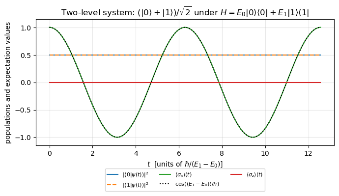
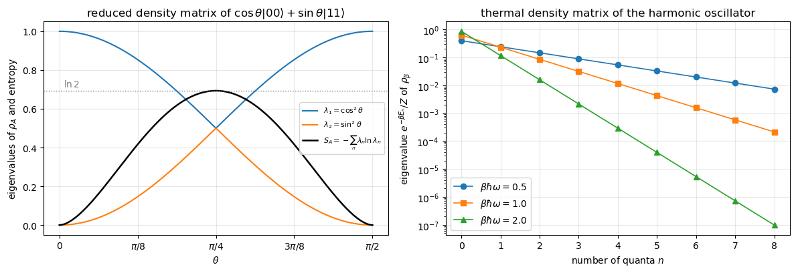
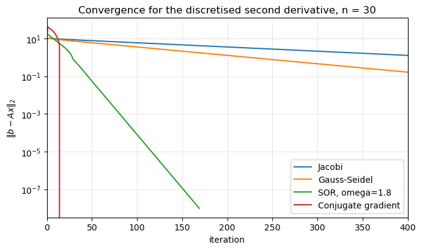
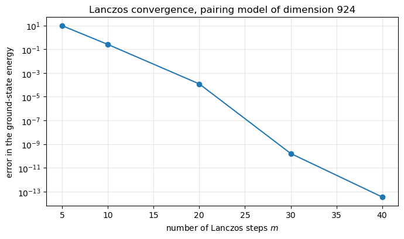
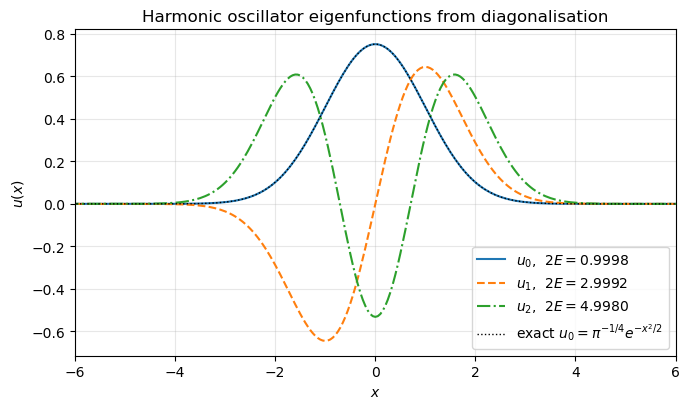
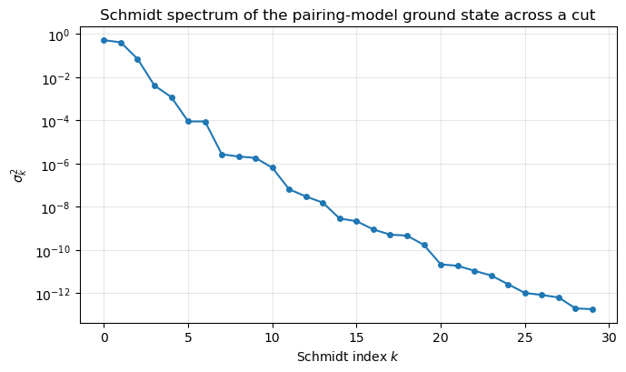
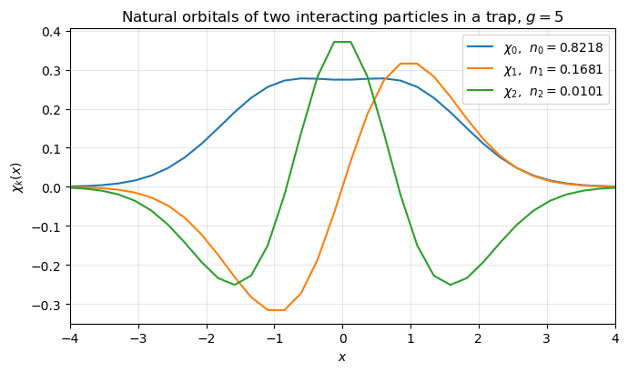
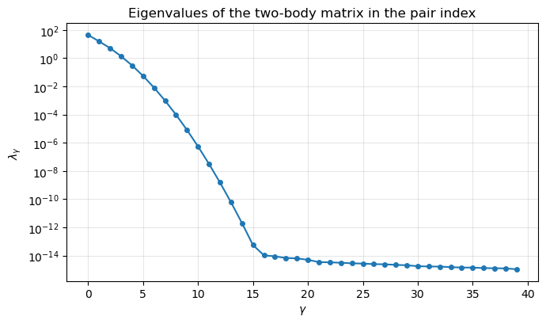

1. Linear algebra and eigenvalue problems#
This notebook is the executable companion to chapter 1 of Quantum mechanics for Many-particle Systems. It contains the algorithms discussed there, in a form you can run and modify:
the spectral decomposition of a Hermitian operator and what it means physically – outcomes, projectors, probabilities, time evolution, density matrices and entanglement;
direct solvers for linear systems – Gaussian elimination, LU, Cholesky and the tridiagonal algorithm;
iterative solvers – Jacobi, Gauss-Seidel, successive over-relaxation and the conjugate gradient method;
the algebraic eigenvalue problem – Householder tridiagonalisation followed by the QL algorithm with implicit shifts;
the Lanczos algorithm, applied to a pairing-model Hamiltonian;
Schrödinger’s equation solved by diagonalisation;
the singular value decomposition and its many-body readings.
Everything is written with NumPy only. The complete stand-alone programs live
in doc/BookManybody/BookPrograms, one directory per chapter.
Throughout, indices run from \(0\) to \(n-1\), so the formulae of the text and the code carry the same indices.
import numpy as np
import matplotlib.pyplot as plt
np.set_printoptions(precision=8, suppress=True)
rng = np.random.default_rng(2026)
1.1. 1. The spectral decomposition, and what it means#
A Hermitian matrix \(\boldsymbol{A}=\boldsymbol{A}^\dagger\) can be written as
with real eigenvalues \(a_\alpha\) and orthogonal projectors
\(\boldsymbol{P}_\alpha\) onto the eigenspaces – one projector per distinct
eigenvalue, so that a degenerate eigenvalue has a projector of rank larger
than one. The projectors are idempotent, mutually orthogonal and complete.
In quantum mechanics every piece of this formula has a physical meaning:
\(a_\alpha\) is a possible value of the observable, \(\boldsymbol{P}_\alpha\) is
the part of Hilbert space that has that value, and
\(\langle\psi|\boldsymbol{P}_\alpha|\psi\rangle\) is the probability of
observing it. This section makes each reading concrete; the code is the
same as in BookPrograms/chapter01/spectral.py.
I2 = np.eye(2, dtype=complex)
SX = np.array([[0, 1], [1, 0]], dtype=complex)
SY = np.array([[0, -1j], [1j, 0]], dtype=complex)
SZ = np.array([[1, 0], [0, -1]], dtype=complex)
def ket(*amplitudes):
v = np.array(amplitudes, dtype=complex)
return v / np.linalg.norm(v)
def projector(*vectors):
P = np.zeros((len(vectors[0]), len(vectors[0])), dtype=complex)
for v in vectors:
P += np.outer(v, v.conj())
return P
class Observable:
# a Hermitian matrix with its spectral decomposition A = sum_a a P_a
def __init__(self, matrix, degeneracy_tol=1e-9):
A = np.asarray(matrix, dtype=complex)
assert np.allclose(A, A.conj().T), "not Hermitian"
self.A = A
self.eigenvalues, self.eigenvectors = np.linalg.eigh(A)
self.values, self.projectors = [], []
k, n = 0, len(self.eigenvalues)
while k < n: # group degenerate eigenvalues
j = k
while j + 1 < n and abs(self.eigenvalues[j + 1] - self.eigenvalues[k]) < degeneracy_tol:
j += 1
self.values.append(float(np.mean(self.eigenvalues[k:j + 1])))
self.projectors.append(projector(*[self.eigenvectors[:, m] for m in range(k, j + 1)]))
k = j + 1
self.values = np.array(self.values)
def probabilities(self, psi): # p_a = <psi|P_a|psi>
return np.array([np.vdot(psi, P @ psi).real for P in self.projectors])
def function(self, f): # f(A) = sum_a f(a) P_a
return sum(f(a) * P for a, P in zip(self.values, self.projectors))
def variance(self, psi):
p = self.probabilities(psi)
return float(np.sum(self.values**2 * p) - np.sum(self.values * p)**2)
def collapse(self, psi, alpha): # the state after the outcome a_alpha
v = self.projectors[alpha] @ psi
return v / np.linalg.norm(v)
def check(self):
idem = max(np.abs(P @ P - P).max() for P in self.projectors)
comp = np.abs(sum(self.projectors) - np.eye(len(self.A))).max()
rec = np.abs(sum(a * P for a, P in zip(self.values, self.projectors)) - self.A).max()
return idem, comp, rec
1.1.1. Eigenvalues are outcomes, projectors are the states of each outcome#
For \(S_z=\tfrac12\sigma_z\) the two terms of the decomposition are the two beams of a Stern-Gerlach magnet. A state \(|\psi\rangle=\cos(\pi/8)|0\rangle+\sin(\pi/8)|1\rangle\) measured along \(z\) and along \(x\) gives, by coincidence of this particular angle, the same two probabilities – but they answer two different questions.
sz = Observable(0.5 * SZ)
sx = Observable(0.5 * SX)
print("checks (idempotent, complete, rebuilds S_z):", ["%.1e" % x for x in sz.check()])
psi = ket(np.cos(np.pi / 8), np.sin(np.pi / 8))
for name, obs in (("S_z", sz), ("S_x", sx)):
for a, p in zip(obs.values, obs.probabilities(psi)):
print(f"{name} = {a:+.1f} with probability {p:.6f}")
print(f" <{name}> = {np.sum(obs.values * obs.probabilities(psi)):+.6f},"
f" variance = {obs.variance(psi):.6f}")
print("state after the outcome S_z = +1/2:", np.round(sz.collapse(psi, 1), 6))
checks (idempotent, complete, rebuilds S_z): ['0.0e+00', '0.0e+00', '0.0e+00']
S_z = -0.5 with probability 0.146447
S_z = +0.5 with probability 0.853553
<S_z> = +0.353553, variance = 0.125000
S_x = -0.5 with probability 0.146447
S_x = +0.5 with probability 0.853553
<S_x> = +0.353553, variance = 0.125000
state after the outcome S_z = +1/2: [1.+0.j 0.+0.j]
1.1.2. Functions of an observable, and why the projector is what matters when eigenvalues are degenerate#
\(f(\boldsymbol{A})=\sum_\alpha f(a_\alpha)\boldsymbol{P}_\alpha\) is how every matrix function in this book is computed. For a degenerate eigenvalue the eigenvectors can be rotated freely inside the eigenspace, but the projector onto it cannot change – which is why the decomposition is written with projectors.
from math import factorial
A = Observable(np.array([[2.0, 1.0, 0.0], [1.0, 2.0, 0.0], [0.0, 0.0, 3.0]]))
print("eigenvalues", np.round(A.eigenvalues, 6), "-> distinct", A.values)
print("max |A^2(spectral) - A A| = %.1e" % np.abs(A.function(lambda a: a**2) - A.A @ A.A).max())
series = sum(np.linalg.matrix_power(A.A, k) / factorial(k) for k in range(40))
print("max |exp(A)(spectral) - Taylor| = %.1e" % np.abs(A.function(np.exp) - series).max())
v1, v2 = A.eigenvectors[:, 1], A.eigenvectors[:, 2] # the degenerate pair
theta = 0.7
w1 = np.cos(theta) * v1 + np.sin(theta) * v2
w2 = -np.sin(theta) * v1 + np.cos(theta) * v2
print("max |P(rotated basis) - P| = %.1e" % np.abs(projector(w1, w2) - A.projectors[1]).max())
eigenvalues [1. 3. 3.] -> distinct [1. 3.]
max |A^2(spectral) - A A| = 8.9e-16
max |exp(A)(spectral) - Taylor| = 7.1e-15
max |P(rotated basis) - P| = 0.0e+00
1.1.3. The Hamiltonian: stationary states and the time evolution#
With \(f(E)=e^{-iEt/\hbar}\) the spectral decomposition of \(\boldsymbol{H}\) gives the evolution operator directly, \(e^{-i\boldsymbol{H}t/\hbar}=\sum_n e^{-iE_nt/\hbar}|E_n\rangle\langle E_n|\). Each energy component only acquires a phase, so the populations are constant; the relative phase \(e^{-i(E_1-E_0)t/\hbar}\) is what rotates the state and makes \(\langle\sigma_x\rangle\) oscillate at the Bohr frequency – a Ramsey fringe.
class TwoLevelSystem:
def __init__(self, E0=0.0, E1=1.0):
self.E0, self.E1 = E0, E1
self.H = Observable(np.diag([E0, E1]))
def evolution(self, t): # U(t) = sum_n exp(-i E_n t) |E_n><E_n|
return self.H.function(lambda E: np.exp(-1j * E * t))
def evolve(self, psi0, t):
return self.evolution(t) @ psi0
sys2 = TwoLevelSystem(E0=0.0, E1=1.0)
psi0 = ket(1.0, 1.0)
times = np.linspace(0.0, 4 * np.pi, 400)
states = np.array([sys2.evolve(psi0, t) for t in times])
pop0, pop1 = np.abs(states[:, 0])**2, np.abs(states[:, 1])**2
sx_t = np.array([np.vdot(s, SX @ s).real for s in states])
sz_t = np.array([np.vdot(s, SZ @ s).real for s in states])
plt.figure(figsize=(7, 4.2))
plt.plot(times, pop0, label=r"$|\langle 0|\psi(t)\rangle|^2$")
plt.plot(times, pop1, "--", label=r"$|\langle 1|\psi(t)\rangle|^2$")
plt.plot(times, sx_t, label=r"$\langle\sigma_x\rangle(t)$")
plt.plot(times, np.cos((sys2.E1 - sys2.E0) * times), "k:", label=r"$\cos((E_1-E_0)t/\hbar)$")
plt.plot(times, sz_t, label=r"$\langle\sigma_z\rangle(t)$")
plt.xlabel(r"$t$ [units of $\hbar/(E_1-E_0)$]")
plt.ylabel("populations and expectation values")
plt.title(r"Two-level system: $(|0\rangle+|1\rangle)/\sqrt{2}$ under $H=E_0|0\rangle\langle 0|+E_1|1\rangle\langle 1|$")
plt.ylim(-1.15, 1.15)
plt.grid(alpha=0.3)
plt.legend(loc="upper center", bbox_to_anchor=(0.5, -0.16), ncol=3, fontsize=8)
plt.tight_layout()
plt.show()
U = sys2.evolution(0.37)
print("U(t) unitary: max |U^+U - I| = %.1e" % np.abs(U.conj().T @ U - I2).max())

U(t) unitary: max |U^+U - I| = 2.2e-17
1.1.4. The harmonic oscillator: projectors count quanta, and the thermal state is Boltzmann weighting#
\(H=\sum_n\hbar\omega(n+\tfrac12)|n\rangle\langle n|\): each projector selects the sector with \(n\) quanta, and the number operator has the same projectors with eigenvalues \(n\). Applying \(f(E)=e^{-\beta E}\) turns the spectral decomposition into the thermal density matrix \(e^{-\beta H}/Z\), whose eigenvalues are the Boltzmann weights.
def oscillator(nmax, omega=1.0):
n = np.arange(nmax + 1)
a = np.diag(np.sqrt(n[1:]), k=1)
N = a.T @ a
return omega * (N + 0.5 * np.eye(nmax + 1)), N, a
class DensityMatrix:
def __init__(self, matrix):
self.rho = np.asarray(matrix, dtype=complex)
self.weights, self.states = np.linalg.eigh(self.rho)
self.weights = np.clip(self.weights, 0.0, None)
@classmethod
def pure(cls, psi):
return cls(np.outer(psi, psi.conj()))
@classmethod
def thermal(cls, H, beta): # exp(-beta H)/Z from the spectrum of H
w = Observable(H).function(lambda E: np.exp(-beta * E))
return cls(w / np.trace(w).real)
@classmethod
def reduced(cls, psi, dims): # Tr_B |psi><psi| = C C^+
C = np.asarray(psi, dtype=complex).reshape(dims)
return cls(C @ C.conj().T)
def purity(self):
return float(np.trace(self.rho @ self.rho).real)
def entropy(self): # -sum p ln p
p = self.weights[self.weights > 1e-15]
return max(float(-np.sum(p * np.log(p))), 0.0)
def expectation(self, A):
return float(np.trace(self.rho @ A).real)
H, N, a = oscillator(nmax=6)
osc = Observable(H)
print("oscillator eigenvalues:", np.round(osc.values, 3))
print("max |P_n(H) - P_n(N)| = %.1e" % max(np.abs(P - Q).max() for P, Q in zip(osc.projectors, Observable(N).projectors)))
rho = DensityMatrix.thermal(H, beta=1.0)
boltz = np.exp(-osc.values); boltz /= boltz.sum()
print("thermal weights :", np.round(rho.weights[::-1], 5))
print("Boltzmann factors :", np.round(boltz, 5))
print(f"<N> = {rho.expectation(N):.5f}, entropy = {rho.entropy():.5f}")
oscillator eigenvalues: [0.5 1.5 2.5 3.5 4.5 5.5 6.5]
max |P_n(H) - P_n(N)| = 0.0e+00
thermal weights : [0.6327 0.23276 0.08563 0.0315 0.01159 0.00426 0.00157]
Boltzmann factors : [0.6327 0.23276 0.08563 0.0315 0.01159 0.00426 0.00157]
<N> = 0.57559, entropy = 1.03335
1.1.5. Density matrices: eigenvalues as statistical weights, and the spectrum of a reduced state as a measure of entanglement#
For a density matrix the eigenvalues are the weights of orthogonal states, and purity and von Neumann entropy \(S=-\sum_n p_n\ln p_n\) depend on nothing else. For the reduced density matrix \(\rho_A={\rm Tr}_B|\Psi\rangle\langle\Psi|\) of a two-qubit state \(\cos\theta|00\rangle+\sin\theta|11\rangle\) the spectrum \(\{\cos^2\theta,\sin^2\theta\}\) is the entanglement spectrum: the product state has \(S_A=0\), the Bell state \(S_A=\ln 2\). These eigenvalues are the squared Schmidt coefficients of section 7.
for name, rho in (("|psi><psi|", DensityMatrix.pure(ket(1.0, 1.0))), ("I/2", DensityMatrix(0.5 * I2))):
print(f"{name:>12s}: spectrum {np.round(rho.weights, 4)}, purity {rho.purity():.4f}, entropy {rho.entropy():.5f}")
thetas = np.linspace(0.0, np.pi / 2, 181)
spectra, entropies = [], []
for theta in thetas:
psi = np.zeros(4, dtype=complex)
psi[0], psi[3] = np.cos(theta), np.sin(theta)
rho_A = DensityMatrix.reduced(psi, (2, 2))
spectra.append(rho_A.weights)
entropies.append(rho_A.entropy())
spectra = np.array(spectra)
fig, ax = plt.subplots(1, 2, figsize=(12, 4.2))
ax[0].plot(thetas, spectra[:, 1], label=r"$\lambda_1=\cos^2\theta$")
ax[0].plot(thetas, spectra[:, 0], label=r"$\lambda_2=\sin^2\theta$")
ax[0].plot(thetas, entropies, "k", lw=1.8, label=r"$S_A=-\sum_n\lambda_n\ln\lambda_n$")
ax[0].axhline(np.log(2), color="gray", ls=":", lw=1)
ax[0].text(0.02, np.log(2) + 0.02, r"$\ln 2$", color="gray")
ax[0].set_xlabel(r"$\theta$"); ax[0].set_ylabel("eigenvalues of $\\rho_A$ and entropy")
ax[0].set_title(r"reduced density matrix of $\cos\theta|00\rangle+\sin\theta|11\rangle$")
ax[0].set_xticks([0, np.pi / 8, np.pi / 4, 3 * np.pi / 8, np.pi / 2])
ax[0].set_xticklabels(["0", r"$\pi/8$", r"$\pi/4$", r"$3\pi/8$", r"$\pi/2$"])
ax[0].grid(alpha=0.3); ax[0].legend(loc="center right", fontsize=8)
H, N, a = oscillator(nmax=8)
n = np.arange(9)
for beta, marker in ((0.5, "o"), (1.0, "s"), (2.0, "^")):
rho = DensityMatrix.thermal(H, beta)
ax[1].semilogy(n, rho.weights[::-1], marker=marker, lw=1.2, label=rf"$\beta\hbar\omega={beta}$")
ax[1].set_xlabel(r"number of quanta $n$"); ax[1].set_ylabel(r"eigenvalue $e^{-\beta E_n}/Z$ of $\rho_\beta$")
ax[1].set_title("thermal density matrix of the harmonic oscillator")
ax[1].grid(alpha=0.3); ax[1].legend()
fig.tight_layout(); plt.show()
|psi><psi|: spectrum [0. 1.], purity 1.0000, entropy 0.00000
I/2: spectrum [0.5 0.5], purity 0.5000, entropy 0.69315

The spectral theorem is thus much more than a diagonalisation theorem: a Hermitian operator is a list of possible physical values together with the sectors of Hilbert space that carry them. Everything that follows in this notebook – and most of this book – is about computing that list.
1.2. 2. Direct solvers#
A direct method produces the exact answer, up to rounding, in a fixed number of operations. Gaussian elimination reduces \(\boldsymbol{A}\) to upper triangular form and then solves by backward substitution,
Partial pivoting – always using the largest element of the current column as the pivot – keeps all multipliers bounded by one and is what makes the method numerically safe.
def gaussian_elimination(A, b):
"""Solve A x = b by Gaussian elimination with partial pivoting."""
n = A.shape[0]
M = A.astype(float).copy()
y = np.asarray(b, dtype=float).copy()
for k in range(n - 1): # forward elimination
p = k + np.argmax(np.abs(M[k:, k])) # partial pivoting
if p != k:
M[[k, p]] = M[[p, k]]
y[k], y[p] = y[p], y[k]
for i in range(k + 1, n):
factor = M[i, k] / M[k, k]
M[i, k:] -= factor * M[k, k:]
y[i] -= factor * y[k]
x = np.zeros(n) # backward substitution
for m in range(n - 1, -1, -1):
x[m] = (y[m] - M[m, m+1:] @ x[m+1:]) / M[m, m]
return x
The LU decomposition keeps the multipliers instead of discarding them, so that \(\boldsymbol{P}\boldsymbol{A}=\boldsymbol{L}\boldsymbol{U}\). The expensive \(\mathcal{O}(n^3)\) factorisation is then done once, and every extra right-hand side costs only \(\mathcal{O}(n^2)\). The determinant comes for free as the product of the diagonal elements of \(\boldsymbol{U}\).
class LUDecomposition:
"""Doolittle LU factorisation with partial pivoting, P A = L U."""
def __init__(self, A):
self.n = A.shape[0]
LU = A.astype(float).copy()
perm = np.arange(self.n)
sign = 1.0
for k in range(self.n):
p = k + np.argmax(np.abs(LU[k:, k]))
if p != k:
LU[[k, p]] = LU[[p, k]]
perm[[k, p]] = perm[[p, k]]
sign = -sign
LU[k+1:, k] /= LU[k, k] # the multipliers
LU[k+1:, k+1:] -= np.outer(LU[k+1:, k], LU[k, k+1:])
self.LU, self.perm, self.sign = LU, perm, sign
@property
def L(self):
return np.tril(self.LU, -1) + np.eye(self.n)
@property
def U(self):
return np.triu(self.LU)
def solve(self, b):
y = np.asarray(b, dtype=float)[self.perm].copy()
for i in range(1, self.n): # L y = P b
y[i] -= self.LU[i, :i] @ y[:i]
x = np.zeros(self.n)
for i in range(self.n - 1, -1, -1): # U x = y
x[i] = (y[i] - self.LU[i, i+1:] @ x[i+1:]) / self.LU[i, i]
return x
def determinant(self):
return self.sign * np.prod(np.diag(self.LU))
def inverse(self):
return np.column_stack([self.solve(e) for e in np.eye(self.n)])
n = 6
A = rng.normal(size=(n, n)) + n * np.eye(n)
b = rng.normal(size=n)
exact = np.linalg.solve(A, b)
lu = LUDecomposition(A)
print(f"Gaussian elimination |x - x_exact| = "
f"{np.linalg.norm(gaussian_elimination(A, b) - exact):.3e}")
print(f"LU decomposition |x - x_exact| = "
f"{np.linalg.norm(lu.solve(b) - exact):.3e}")
print(f" |P A - L U| = "
f"{np.linalg.norm(A[lu.perm] - lu.L @ lu.U):.3e}")
print(f"determinant ours {lu.determinant():+.8e} "
f"numpy {np.linalg.det(A):+.8e}")
print(f"inverse |A^-1 A - I| = "
f"{np.linalg.norm(lu.inverse() @ A - np.eye(n)):.3e}")
Gaussian elimination |x - x_exact| = 0.000e+00
LU decomposition |x - x_exact| = 2.776e-17
|P A - L U| = 9.506e-16
determinant ours +3.85798536e+04 numpy +3.85798536e+04
inverse |A^-1 A - I| = 4.270e-16
1.2.1. Structure pays: the tridiagonal solver#
The matrix that comes out of discretising \(-u''=f\) is tridiagonal. Solving it with general elimination would cost \(2n^3/3\) operations; the specialised forward/backward sweep costs \(\mathcal{O}(n)\). Recognising structure is worth more than any amount of tuning.
def tridiagonal_solve(a, b, c, f):
"""Solve a_i u_{i-1} + b_i u_i + c_i u_{i+1} = f_i in O(n) operations."""
n = len(b)
temp = np.zeros(n)
u = np.zeros(n)
btemp = b[0] # forward substitution
u[0] = f[0] / btemp
for i in range(1, n):
temp[i] = c[i-1] / btemp
btemp = b[i] - a[i] * temp[i]
u[i] = (f[i] - a[i] * u[i-1]) / btemp
for i in range(n - 2, -1, -1): # backward substitution
u[i] -= temp[i+1] * u[i+1]
return u
# -u'' = 2 on (0,1) with u(0)=u(1)=0; the exact solution is u(x) = x(1-x)
n = 100
h = 1.0 / (n + 1)
x = np.linspace(h, 1.0 - h, n)
u = tridiagonal_solve(np.full(n, -1/h**2), np.full(n, 2/h**2),
np.full(n, -1/h**2), np.full(n, 2.0))
print(f"max |u_numerical - x(1-x)| = {np.max(np.abs(u - x*(1-x))):.3e}")
max |u_numerical - x(1-x)| = 8.604e-16
1.3. 3. Iterative solvers#
Iterative methods never need the matrix itself, only the product \(\boldsymbol{A}\boldsymbol{x}\). Splitting \(\boldsymbol{A}=\boldsymbol{D}+\boldsymbol{L}+\boldsymbol{U}\),
and successive over-relaxation exaggerates the Gauss-Seidel step by a factor \(\omega\). The conjugate gradient method takes a different route: it minimises \(P(\boldsymbol{x})=\tfrac12\boldsymbol{x}^T\boldsymbol{A}\boldsymbol{x}-\boldsymbol{x}^T\boldsymbol{b}\) along directions that are conjugate, \(\boldsymbol{p}_i^T\boldsymbol{A}\boldsymbol{p}_j=0\).
def jacobi(A, b, tol=1e-8, max_iter=100000):
d = np.diag(A)
R = A - np.diag(d)
x = np.zeros_like(b)
hist = []
for k in range(max_iter):
x = (b - R @ x) / d
hist.append(np.linalg.norm(b - A @ x))
if hist[-1] < tol:
break
return x, hist
def gauss_seidel(A, b, omega=1.0, tol=1e-8, max_iter=100000):
"""omega = 1 is Gauss-Seidel; 1 < omega < 2 is over-relaxation."""
n = len(b)
x = np.zeros_like(b)
hist = []
for k in range(max_iter):
for i in range(n):
s = A[i, :i] @ x[:i] + A[i, i+1:] @ x[i+1:]
x[i] = (1 - omega) * x[i] + omega * (b[i] - s) / A[i, i]
hist.append(np.linalg.norm(b - A @ x))
if hist[-1] < tol:
break
return x, hist
def conjugate_gradient(matvec, b, tol=1e-8, max_iter=None):
"""Only the product A p is used, so matvec may be matrix-free."""
n = len(b)
max_iter = n if max_iter is None else max_iter
x = np.zeros_like(b)
r = b - matvec(x)
p = r.copy()
rs = r @ r
hist = [np.sqrt(rs)]
for k in range(max_iter):
Ap = matvec(p)
alpha = rs / (p @ Ap)
x += alpha * p # x_{k+1} = x_k + alpha_k p_k
r -= alpha * Ap # r_{k+1} = r_k - alpha_k A p_k
rs_new = r @ r
hist.append(np.sqrt(rs_new))
if hist[-1] < tol:
break
p = r + (rs_new / rs) * p # beta_k = |r_{k+1}|^2/|r_k|^2
rs = rs_new
return x, hist
n = 30
h = 1.0 / (n + 1)
A = (np.diag(np.full(n, 2.0)) + np.diag(np.full(n-1, -1.0), 1)
+ np.diag(np.full(n-1, -1.0), -1)) / h**2
xg = np.linspace(h, 1-h, n)
b = np.full(n, 2.0)
exact = xg * (1 - xg)
results = {}
results["Jacobi"] = jacobi(A, b)
results["Gauss-Seidel"] = gauss_seidel(A, b, omega=1.0)
results["SOR, omega=1.8"] = gauss_seidel(A, b, omega=1.8)
results["Conjugate gradient"] = conjugate_gradient(lambda v: A @ v, b)
print(f"{'method':22s} {'iterations':>12s} {'|x - exact|':>16s}")
print("-" * 52)
for name, (x, hist) in results.items():
print(f"{name:22s} {len(hist):12d} {np.linalg.norm(x - exact):16.3e}")
method iterations |x - exact|
----------------------------------------------------
Jacobi 4030 1.009e-09
Gauss-Seidel 2016 1.003e-09
SOR, omega=1.8 170 4.857e-10
Conjugate gradient 16 1.578e-16
plt.figure(figsize=(7, 4.2))
for name, (x, hist) in results.items():
plt.semilogy(hist, label=name)
plt.xlabel("iteration")
plt.ylabel(r"$\|b - Ax\|_2$")
plt.title(f"Convergence for the discretised second derivative, n = {n}")
plt.xlim(0, 400)
plt.grid(alpha=0.3)
plt.legend()
plt.tight_layout()
plt.show()

1.4. 4. The eigenvalue problem: Householder and QL#
A real symmetric matrix is diagonalised in two steps. First a sequence of Householder reflectors \(\boldsymbol{P}=\boldsymbol{I}-2\boldsymbol{u}\boldsymbol{u}^T\) reduces \(\boldsymbol{A}\) to tridiagonal form, \(\boldsymbol{T}=\boldsymbol{S}^T\boldsymbol{A}\boldsymbol{S}\). Since this is a similarity transformation the eigenvalues are untouched. The sign of
is chosen so that the subtraction \(\boldsymbol{v}-\kappa\boldsymbol{e}\) never suffers cancellation. Second, the tridiagonal matrix is diagonalised by the QL algorithm with implicit Wilkinson shifts.
def householder_tridiagonalize(A, tol=1e-14):
"""Return (d, e, S) with S^T A S tridiagonal."""
n = A.shape[0]
M = A.astype(float).copy()
S = np.eye(n)
for k in range(n - 2):
v = M[k+1:, k]
norm_v = np.linalg.norm(v)
if norm_v < tol:
continue
kappa = -np.copysign(norm_v, v[0]) # avoids cancellation
w = v.copy()
w[0] -= kappa
u = w / np.linalg.norm(w)
block = M[k+1:, k+1:] # P A P = A - 2 z u^T - 2 u z^T
p = block @ u
z = p - (u @ p) * u
M[k+1:, k+1:] = block - 2*np.outer(z, u) - 2*np.outer(u, z)
M[k+1:, k] = 0.0
M[k+1, k] = kappa
M[k, k+1:] = 0.0
M[k, k+1] = kappa
S[:, k+1:] -= 2 * np.outer(S[:, k+1:] @ u, u) # S <- S P
return np.diag(M).copy(), np.diag(M, -1).copy(), S
def tqli(d, e, z=None, max_sweeps=50):
"""QL algorithm with implicit shifts for a symmetric tridiagonal matrix."""
d = np.asarray(d, dtype=float).copy()
n = len(d)
e = np.concatenate([np.asarray(e, dtype=float), [0.0]])
z = np.eye(n) if z is None else np.asarray(z, dtype=float).copy()
eps = np.finfo(float).eps
for l in range(n):
for _ in range(max_sweeps):
m = n - 1 # find a negligible element
for i in range(l, n - 1):
if abs(e[i]) <= eps * (abs(d[i]) + abs(d[i+1])):
m = i
break
if m == l:
break
g = (d[l+1] - d[l]) / (2.0 * e[l]) # Wilkinson shift
r = np.hypot(g, 1.0)
g = d[m] - d[l] + e[l] / (g + np.copysign(r, g))
s = c = 1.0
p = 0.0
for i in range(m - 1, l - 1, -1):
f, bb = s * e[i], c * e[i]
r = np.hypot(f, g)
e[i+1] = r
s, c = f / r, g / r
g = d[i+1] - p
r = (d[i] - g) * s + 2.0 * c * bb
p = s * r
d[i+1] = g + p
g = c * r - bb
col = z[:, i+1].copy()
z[:, i+1] = s * z[:, i] + c * col
z[:, i] = c * z[:, i] - s * col
d[l] -= p
e[l] = g
e[m] = 0.0
order = np.argsort(d)
return d[order], z[:, order]
n = 8
M = rng.normal(size=(n, n))
A = 0.5 * (M + M.T)
d, e, S = householder_tridiagonalize(A)
T = np.diag(d) + np.diag(e, 1) + np.diag(e, -1)
print(f"|S^T S - I| = {np.linalg.norm(S.T @ S - np.eye(n)):.3e}")
print(f"|S T S^T - A| = {np.linalg.norm(S @ T @ S.T - A):.3e}")
values, vectors = tqli(d, e, S)
reference = np.linalg.eigvalsh(A)
print()
print("eigenvalues, Householder + QL:", values)
print("eigenvalues, numpy :", reference)
print(f"max deviation = {np.max(np.abs(values - reference)):.3e}")
print(f"|A V - V diag(l)| = "
f"{np.linalg.norm(A @ vectors - vectors @ np.diag(values)):.3e}")
|S^T S - I| = 4.079e-16
|S T S^T - A| = 2.372e-15
eigenvalues, Householder + QL: [-4.28864482 -2.53848701 -1.05594757 0.28544745 0.61452604 1.6427293
2.02230253 3.41003844]
eigenvalues, numpy : [-4.28864482 -2.53848701 -1.05594757 0.28544745 0.61452604 1.6427293
2.02230253 3.41003844]
max deviation = 1.554e-15
|A V - V diag(l)| = 4.459e-15
1.5. 5. The Lanczos algorithm#
For a many-body Hamiltonian the matrix is far too large to store, but the product \(\boldsymbol{A}\boldsymbol{q}\) is always available. The Lanczos algorithm exploits exactly this. It builds an orthonormal basis of the Krylov space
through the three-term recurrence
In that basis \(\boldsymbol{A}\) is a small tridiagonal matrix whose eigenvalues, the Ritz values, converge rapidly to the extremal eigenvalues of \(\boldsymbol{A}\).
def lanczos(matvec, n, m, q0=None, reorthogonalize=True, tol=1e-12):
"""m Lanczos steps; returns the tridiagonal elements and the basis."""
q = rng.normal(size=n) if q0 is None else np.asarray(q0, float).copy()
q /= np.linalg.norm(q)
Q = np.zeros((n, m))
alpha = np.zeros(m)
beta = np.zeros(max(m - 1, 0))
q_prev = np.zeros(n)
b_prev = 0.0
for k in range(m):
Q[:, k] = q
w = matvec(q) # the only use made of A
alpha[k] = q @ w
w = w - alpha[k] * q - b_prev * q_prev # r_k
if reorthogonalize: # cures the ghost states
for _ in range(2):
w -= Q[:, :k+1] @ (Q[:, :k+1].T @ w)
if k == m - 1:
break
b = np.linalg.norm(w)
if b < tol: # invariant subspace
alpha, beta, Q = alpha[:k+1], beta[:k], Q[:, :k+1]
break
beta[k] = b
q_prev, b_prev = q, b
q = w / b
return alpha, beta, Q
def ritz(matvec, n, m, reorthogonalize=True):
alpha, beta, Q = lanczos(matvec, n, m, reorthogonalize=reorthogonalize)
theta, y = tqli(alpha, beta)
return theta, Q @ y, Q
1.5.1. A many-body test case: the pairing model#
We use the pairing Hamiltonian of the course,
with doubly degenerate levels \(p=1,\dots,L\). In the space with no broken pairs a basis state is a choice of which levels carry a pair, so the dimension is \(\binom{L}{n}\). Two configurations that differ by moving one pair are coupled by \(-g\).
from itertools import combinations
def pairing_hamiltonian(levels=12, pairs=6, delta=1.0, g=0.5):
basis = list(combinations(range(1, levels + 1), pairs))
index = {c: i for i, c in enumerate(basis)}
dim = len(basis)
H = np.zeros((dim, dim))
for c, i in index.items():
H[i, i] = 2.0 * delta * sum(p - 1 for p in c) - g * pairs
occupied = set(c)
for p in c: # move a pair from p
for q in range(1, levels + 1): # to an empty level q
if q in occupied:
continue
H[index[tuple(sorted(occupied - {p} | {q}))], i] -= g
return H
H = pairing_hamiltonian()
dim = H.shape[0]
exact = np.linalg.eigvalsh(H)
print(f"dimension of the pairing matrix: {dim}")
print(f"exact ground-state energy : {exact[0]:.12f}")
dimension of the pairing matrix: 924
exact ground-state energy : 24.839172748451
print(f"{'m':>4s} {'lowest Ritz value':>22s} {'error':>12s} "
f"{'second':>18s} {'error':>12s}")
print("-" * 72)
steps, errors = [], []
for m in (5, 10, 20, 30, 40):
theta, _, _ = ritz(lambda v: H @ v, dim, m)
steps.append(m)
errors.append(abs(theta[0] - exact[0]))
print(f"{m:4d} {theta[0]:22.12f} {abs(theta[0]-exact[0]):12.2e} "
f"{theta[1]:18.10f} {abs(theta[1]-exact[1]):12.2e}")
print("-" * 72)
print(f"{'exact':>4s} {exact[0]:22.12f} {'':12s} {exact[1]:18.10f}")
m lowest Ritz value error second error
------------------------------------------------------------------------
5 34.361844534347 9.52e+00 48.1081114733 2.02e+01
10 25.090067574237 2.51e-01 32.3434156367 4.44e+00
20 24.839291576387 1.19e-04 27.9192438101 1.45e-02
30 24.839172748614 1.63e-10 27.9047375614 2.08e-06
40 24.839172748451 3.55e-14 27.9047354807 6.07e-11
------------------------------------------------------------------------
exact 24.839172748451 27.9047354806
plt.figure(figsize=(7, 4.2))
plt.semilogy(steps, np.maximum(errors, 1e-16), "o-")
plt.xlabel("number of Lanczos steps $m$")
plt.ylabel("error in the ground-state energy")
plt.title(f"Lanczos convergence, pairing model of dimension {dim}")
plt.grid(alpha=0.3)
plt.tight_layout()
plt.show()

1.5.2. Loss of orthogonality#
In exact arithmetic the three-term recurrence produces orthogonal vectors by itself. In floating-point arithmetic it does not: as soon as one Ritz value converges, its direction creeps back into the remainder and the algorithm starts reporting spurious extra copies of eigenvalues it has already found. Compare the two runs below.
for flag in (True, False):
theta, _, Q = ritz(lambda v: H @ v, dim, 120, reorthogonalize=flag)
dev = np.linalg.norm(Q.T @ Q - np.eye(Q.shape[1]))
copies = int(np.sum(np.abs(theta - exact[0]) < 1e-8))
print(f"reorthogonalize = {str(flag):5s}: |Q^T Q - I| = {dev:9.2e},"
f" copies of the ground state: {copies}")
reorthogonalize = True : |Q^T Q - I| = 7.79e-15, copies of the ground state: 1
reorthogonalize = False: |Q^T Q - I| = 5.27e+00, copies of the ground state: 3
1.6. 6. Schrödinger’s equation by diagonalisation#
With the three-point formula for the second derivative, the one-dimensional equation
becomes the tridiagonal eigenvalue problem
The boundary conditions \(u(R_{\min})=u(R_{\max})=0\) are imposed by leaving the endpoints out of the matrix. The exact eigenvalues are \(2E_k = 2k+1\).
class SchrodingerDiagonalization:
"""Discretise -u'' + V(x) u = 2E u and diagonalise the result."""
def __init__(self, potential, rmin=-10.0, rmax=10.0, nsteps=400):
self.potential = potential
self.h = (rmax - rmin) / nsteps
self.x = rmin + self.h * np.arange(1, nsteps) # interior points only
self.n = len(self.x)
@property
def diagonal(self):
return 2.0 / self.h**2 + self.potential(self.x)
@property
def offdiagonal(self):
return np.full(self.n - 1, -1.0 / self.h**2)
def matvec(self, v):
"""Apply the Hamiltonian without ever forming the matrix."""
w = self.diagonal * v
w[:-1] -= v[1:] / self.h**2
w[1:] -= v[:-1] / self.h**2
return w
def solve(self, k=5):
values, vectors = tqli(self.diagonal, self.offdiagonal)
return values[:k], self._normalise(vectors[:, :k])
def solve_lanczos(self, k=3, m=200):
theta, vectors, _ = ritz(self.matvec, self.n, m)
return theta[:k], self._normalise(vectors[:, :k])
def _normalise(self, vectors):
"""Trapezoidal rule: h * sum |u_i|^2 = 1."""
vectors = vectors / np.sqrt(self.h * np.sum(vectors**2, axis=0))
for j in range(vectors.shape[1]):
if vectors[np.argmax(np.abs(vectors[:, j])), j] < 0:
vectors[:, j] *= -1
return vectors
harmonic = lambda x: x**2
truth = np.array([1.0, 3.0, 5.0, 7.0, 9.0])
print(f"{'N':>7s} {'2E_0':>16s} {'2E_1':>16s} {'2E_2':>16s} {'max error':>12s}")
print("-" * 72)
for nsteps in (100, 200, 400, 800):
values, _ = SchrodingerDiagonalization(harmonic, -10, 10, nsteps).solve(5)
print(f"{nsteps:7d} {values[0]:16.10f} {values[1]:16.10f} "
f"{values[2]:16.10f} {np.max(np.abs(values - truth)):12.2e}")
print("-" * 72)
print(f"{'exact':>7s} {truth[0]:16.10f} {truth[1]:16.10f} {truth[2]:16.10f}")
print()
print("Doubling N divides the error by four: the O(h^2) truncation error")
print("of the three-point formula, exactly as expected.")
N 2E_0 2E_1 2E_2 max error
------------------------------------------------------------------------
100 0.9974937026 2.9874430342 4.9672772610 1.04e-01
200 0.9993746086 2.9968714733 4.9918612670 2.57e-02
400 0.9998437256 2.9992185301 4.9979678946 6.41e-03
800 0.9999609360 2.9998046738 4.9994921341 1.60e-03
------------------------------------------------------------------------
exact 1.0000000000 3.0000000000 5.0000000000
Doubling N divides the error by four: the O(h^2) truncation error
of the three-point formula, exactly as expected.
problem = SchrodingerDiagonalization(harmonic, -10, 10, 400)
direct, u_direct = problem.solve(3)
ritz_values, _ = problem.solve_lanczos(3, m=200)
print(f"{'state':>7s} {'QL (direct)':>18s} {'Lanczos':>18s} {'difference':>14s}")
for j in range(3):
print(f"{j:7d} {direct[j]:18.10f} {ritz_values[j]:18.10f} "
f"{abs(direct[j]-ritz_values[j]):14.2e}")
state QL (direct) Lanczos difference
0 0.9998437256 0.9998437256 1.60e-13
1 2.9992185301 2.9992185301 6.24e-13
2 4.9979678946 4.9979678946 1.48e-11
x = problem.x
plt.figure(figsize=(7, 4.2))
for j, style in zip(range(3), ("-", "--", "-.")):
plt.plot(x, u_direct[:, j], style, label=fr"$u_{j}$, $2E={direct[j]:.4f}$")
plt.plot(x, np.pi**-0.25 * np.exp(-x**2 / 2), "k:", lw=1,
label=r"exact $u_0=\pi^{-1/4}e^{-x^2/2}$")
plt.xlim(-6, 6)
plt.xlabel("$x$")
plt.ylabel("$u(x)$")
plt.title("Harmonic oscillator eigenfunctions from diagonalisation")
plt.grid(alpha=0.3)
plt.legend()
plt.tight_layout()
plt.show()

1.7. 7. The singular value decomposition#
Everything above assumed a square matrix, and mostly a symmetric one. Many objects in many-body physics are neither: the coefficients of a state across a bipartition, a set of sampled wave functions, the two-body matrix elements in a composite pair index. The SVD handles all of them.
Any \(m\times n\) matrix can be written
with \(\boldsymbol{U}\) and \(\boldsymbol{V}\) orthogonal. It always exists — even for a defective matrix that cannot be diagonalised at all. The right singular vectors are the eigenvectors of \(\boldsymbol{X}^T\boldsymbol{X}\) and the left ones those of \(\boldsymbol{X}\boldsymbol{X}^T\), both with eigenvalues \(\sigma_i^2\). Those two products will turn out to be the reduced density matrices of a bipartite state.
X = np.array([[1.0, -1.0], [1.0, -1.0]])
U, sigma, Vt = np.linalg.svd(X)
print("X =\n", X)
print(f"det(X) = {np.linalg.det(X):.1f} -> X is singular")
print(f"X X^T == X^T X ? {np.allclose(X @ X.T, X.T @ X)} -> not normal, "
f"so X cannot be diagonalised")
print()
print("singular values:", np.round(sigma, 12))
print("U =\n", np.round(U, 8))
print("V^T =\n", np.round(Vt, 8))
print(f"\n|U Sigma V^T - X| = "
f"{np.linalg.norm((U * sigma) @ Vt - X):.3e}")
X =
[[ 1. -1.]
[ 1. -1.]]
det(X) = 0.0 -> X is singular
X X^T == X^T X ? False -> not normal, so X cannot be diagonalised
singular values: [2. 0.]
U =
[[-0.70710678 -0.70710678]
[-0.70710678 0.70710678]]
V^T =
[[-0.70710678 0.70710678]
[ 0.70710678 0.70710678]]
|U Sigma V^T - X| = 5.979e-16
1.7.1. Never form \(\boldsymbol{X}^T\boldsymbol{X}\)#
Since \(\sigma_i^2\) are the eigenvalues of \(\boldsymbol{X}^T\boldsymbol{X}\), one could compute singular values by diagonalising that product. It is correct mathematically and poor numerically: forming the product squares the condition number, so half the significant digits are gone before the eigenvalue solver is called.
Q, _ = np.linalg.qr(rng.normal(size=(60, 12)))
P, _ = np.linalg.qr(rng.normal(size=(12, 12)))
sigma_true = np.logspace(0, -7, 12)
X = (Q * sigma_true) @ P.T
direct = np.linalg.svd(X, compute_uv=False)
naive = np.sqrt(np.maximum(np.linalg.eigvalsh(X.T @ X)[::-1], 0.0))
print(f"{'exact sigma':>16s} {'from SVD':>16s} {'from X^T X':>16s} "
f"{'rel. error':>13s}")
for k in (0, 5, 9, 10, 11):
print(f"{sigma_true[k]:16.8e} {direct[k]:16.8e} {naive[k]:16.8e} "
f"{abs(naive[k]-sigma_true[k])/sigma_true[k]:13.2e}")
print(f"\nkappa(X) = {direct[0]/direct[-1]:.2e}")
print(f"kappa(X^T X) = {(direct[0]/direct[-1])**2:.2e}")
exact sigma from SVD from X^T X rel. error
1.00000000e+00 1.00000000e+00 1.00000000e+00 2.22e-16
6.57933225e-04 6.57933225e-04 6.57933225e-04 8.06e-12
1.87381742e-06 1.87381742e-06 1.87381802e-06 3.18e-07
4.32876128e-07 4.32876128e-07 4.32858470e-07 4.08e-05
1.00000000e-07 1.00000000e-07 9.99819498e-08 1.81e-04
kappa(X) = 1.00e+07
kappa(X^T X) = 1.00e+14
1.7.2. Rank, the pseudoinverse and near-linearly-dependent bases#
The rank is the number of non-zero singular values, and the condition number is \(\kappa_2=\sigma_0/\sigma_{r-1}\). When a matrix is singular or nearly so, the Moore-Penrose pseudoinverse
replaces the inverse: the reciprocals of the singular values are taken only above a threshold, and the rest are set to zero rather than inverted.
Many-body calculations use non-orthogonal bases — Gaussians, oscillator states of different length, generator coordinates — which become linearly dependent long before one would like. The generalised problem \(\boldsymbol{H}\boldsymbol{c}=E\boldsymbol{S}\boldsymbol{c}\) is reduced to an ordinary one by \(\boldsymbol{X}=\boldsymbol{V}\boldsymbol{s}^{-1/2}\), which involves \(s_i^{-1/2}\) and so breaks down exactly where an overlap eigenvalue is tiny. Canonical orthogonalisation discards those directions first.
def gaussian_basis(n_orb=12, n_grid=200, rmax=4.0, width=1.4, softening=0.5):
"""Overlap matrix and two-body matrix elements for overlapping Gaussians."""
h = 2.0 * rmax / (n_grid - 1)
x = np.linspace(-rmax, rmax, n_grid)
centres = np.linspace(-rmax * 0.8, rmax * 0.8, n_orb)
phi = np.exp(-(x[None, :] - centres[:, None])**2 / (2.0 * width**2))
phi /= np.sqrt(h * np.sum(phi**2, axis=1))[:, None]
S = h * (phi @ phi.T) # overlap
rho = (phi[:, None, :] * phi[None, :, :]).reshape(n_orb*n_orb, n_grid)
K = 1.0 / np.sqrt((x[:, None] - x[None, :])**2 + softening**2)
V = h**2 * (rho @ K @ rho.T) # pair supermatrix
return S, V
def canonical_orthogonalization(S, threshold=1e-8):
"""X = V s^{-1/2}, keeping only eigenvalues above threshold * s_max."""
w, V = np.linalg.eigh(S)
order = np.argsort(w)[::-1]
w, V = w[order], V[:, order]
keep = w > threshold * w[0]
return V[:, keep] / np.sqrt(w[keep]), w, int(np.sum(keep))
S, V2b = gaussian_basis()
_, w, _ = canonical_orthogonalization(S, 0.0)
print(f"{S.shape[0]} Gaussians, condition number of S: {w[0]/w[-1]:.3e}")
print("eigenvalues of S:")
print(" ", " ".join(f"{v:.2e}" for v in w))
print()
for thr in (0.0, 1e-12, 1e-8, 1e-5):
_, _, kept = canonical_orthogonalization(S, thr)
print(f"threshold {thr:8.0e}: kept {kept:2d} of {S.shape[0]}"
f" effective kappa = {w[0]/w[kept-1]:9.2e}")
12 Gaussians, condition number of S: 1.062e+13
eigenvalues of S:
6.93e+00 3.61e+00 1.17e+00 2.43e-01 3.35e-02 3.19e-03 2.13e-04 1.01e-05 3.32e-07 7.37e-09 1.01e-10 6.53e-13
threshold 0e+00: kept 12 of 12 effective kappa = 1.06e+13
threshold 1e-12: kept 11 of 12 effective kappa = 6.87e+10
threshold 1e-08: kept 9 of 12 effective kappa = 2.09e+07
threshold 1e-05: kept 7 of 12 effective kappa = 3.25e+04
1.7.3. Low-rank approximation and the Schmidt decomposition#
Truncating
after \(\chi\) terms gives, by the Eckart-Young theorem, the best rank-\(\chi\) approximation, with error exactly \(\sigma_\chi\) in the 2-norm.
For a state split into parts \(A\) and \(B\), \(|\Psi\rangle=\sum_{ij}C_{ij}|i\rangle_A|j\rangle_B\), the SVD of \(\boldsymbol{C}\) gives the Schmidt decomposition
the reduced density matrices are \(\rho_A=\boldsymbol{C}\boldsymbol{C}^T\) and \(\rho_B=\boldsymbol{C}^T\boldsymbol{C}\) with the same eigenvalues \(\sigma_k^2\), and the entanglement entropy is \(S=-\sum_k\sigma_k^2\ln\sigma_k^2\). A Schmidt rank of one means a product state. The discarded weight \(\sum_{k\ge\chi}\sigma_k^2\) is precisely the DMRG truncation error, and \(\chi\) its bond dimension.
class SchmidtDecomposition:
"""The SVD of a bipartitioned state vector."""
def __init__(self, C):
self.C = np.asarray(C, dtype=float)
self.U, self.sigma, self.Vt = np.linalg.svd(C, full_matrices=False)
self.weights = self.sigma**2 # normalised: sum_k sigma_k^2 = 1
def schmidt_rank(self, tol=1e-10):
return int(np.sum(self.sigma > tol * self.sigma[0]))
def entanglement_entropy(self, base=np.e):
w = self.weights[self.weights > 1e-16]
entropy = -np.sum(w * np.log(w)) / np.log(base)
return float(entropy) if entropy > 0.0 else 0.0
def truncation_error(self, k):
"""Weight discarded when only k Schmidt states are kept."""
return float(np.sum(self.weights[k:]))
def states_for(self, tol):
return 1 + int(np.argmax(np.cumsum(self.weights) > 1.0 - tol))
1.7.3.1. The pairing model across a cut#
Split the twelve levels of the pairing model into the lowest six and the highest six. A seniority-zero basis state is a set of occupied levels, which factorises into its part in \(A\) and its part in \(B\), so the coefficients form a \(64\times 64\) matrix whose singular values are the Schmidt coefficients across the cut. This is exactly the object a DMRG sweep truncates.
def pairing_bipartition(levels=12, pairs=6, delta=1.0, g=0.5):
"""Ground state of the pairing model as a coefficient matrix C[A, B]."""
H = pairing_hamiltonian(levels, pairs, delta, g)
values, vectors = np.linalg.eigh(H)
psi = vectors[:, 0]
basis = list(combinations(range(1, levels + 1), pairs))
half = levels // 2
left, right = list(range(1, half+1)), list(range(half+1, levels+1))
subs = lambda L: [frozenset(s) for k in range(len(L)+1)
for s in combinations(L, k)]
iA = {s: i for i, s in enumerate(subs(left))}
iB = {s: i for i, s in enumerate(subs(right))}
C = np.zeros((len(iA), len(iB)))
for n, c in enumerate(basis):
a = frozenset(p for p in c if p <= half)
b = frozenset(p for p in c if p > half)
C[iA[a], iB[b]] = psi[n]
return values[0], C
E0, C = pairing_bipartition()
sd = SchmidtDecomposition(C)
print(f"ground-state energy : {E0:.10f}")
print(f"coefficient matrix : {C.shape[0]} x {C.shape[1]}")
print(f"entanglement entropy : {sd.entanglement_entropy():.6f}"
f" (maximum possible: {np.log(C.shape[0]):.4f})")
print("largest Schmidt weights:", np.array2string(sd.weights[:7], precision=6))
print()
print(f"{'chi':>6s} {'discarded weight':>20s}")
for k in (1, 2, 3, 5, 7, 10, 15):
print(f"{k:6d} {sd.truncation_error(k):20.3e}")
ground-state energy : 24.8391727485
coefficient matrix : 64 x 64
entanglement entropy : 0.923766 (maximum possible: 4.1589)
largest Schmidt weights: [0.516901 0.408486 0.069164 0.00407 0.001193 0.000089 0.000089]
chi discarded weight
1 4.831e-01
2 7.461e-02
3 5.448e-03
5 1.854e-04
7 7.363e-06
10 7.530e-07
15 4.225e-09
plt.figure(figsize=(7, 4.2))
plt.semilogy(np.maximum(sd.weights[:30], 1e-18), "o-", ms=4)
plt.xlabel(r"Schmidt index $k$")
plt.ylabel(r"$\sigma_k^2$")
plt.title("Schmidt spectrum of the pairing-model ground state across a cut")
plt.grid(alpha=0.3)
plt.tight_layout()
plt.show()

1.7.4. Natural orbitals and occupation numbers#
For two identical particles the same decomposition has another name. Writing \(\Psi(x_1,x_2)=\sum_{pq}C_{pq}\varphi_p(x_1)\varphi_q(x_2)\) with \(\boldsymbol{C}\) symmetric, the SVD gives the natural expansion
whose orbitals \(\chi_k\) are Löwdin’s natural orbitals — the eigenvectors of the one-body density matrix — and whose \(\sigma_k^2\) are the occupation numbers. A single Slater determinant has \(N\) occupations equal to one and the rest zero; correlation depletes them.
We test this on two particles in a harmonic trap with a softened Coulomb repulsion, diagonalising the full two-particle problem on a grid.
def two_particles_in_a_trap(n=40, rmax=5.0, strength=2.0, softening=0.5):
"""Two particles in a 1D harmonic trap, solved in the product basis."""
h = 2.0 * rmax / (n + 1)
x = -rmax + h * np.arange(1, n + 1)
h1 = np.diag(2.0 / h**2 + x**2)
off = -1.0 / h**2
h1 += np.diag(np.full(n-1, off), 1) + np.diag(np.full(n-1, off), -1)
I = np.eye(n)
H = np.kron(h1, I) + np.kron(I, h1)
H += np.diag((strength / np.sqrt((x[:, None]-x[None, :])**2
+ softening**2)).ravel())
values, vectors = np.linalg.eigh(H)
C = vectors[:, 0].reshape(n, n)
C = 0.5 * (C + C.T) # the ground state is symmetric
return values[0], C / np.linalg.norm(C), x
print(f"{'g':>5s} {'E_0':>12s} {'entropy':>11s} {'n_0':>10s} {'n_1':>10s} "
f"{'n_2':>11s} {'chi for 1e-8':>13s}")
print("-" * 76)
orbitals = {}
for g in (0.0, 1.0, 2.0, 5.0):
E0, C, x = two_particles_in_a_trap(strength=g)
s = SchmidtDecomposition(C)
orbitals[g] = (x, s)
print(f"{g:5.1f} {E0:12.6f} {s.entanglement_entropy():11.6f} "
f"{s.weights[0]:10.6f} {s.weights[1]:10.6f} {s.weights[2]:11.3e} "
f"{s.states_for(1e-8):13d}")
print("-" * 76)
print("At g = 0 the state is a product: one natural orbital, zero entropy.")
g E_0 entropy n_0 n_1 n_2 chi for 1e-8
----------------------------------------------------------------------------
0.0 1.992536 0.000000 1.000000 0.000000 1.117e-29 1
1.0 3.173866 0.040874 0.993528 0.006017 4.153e-04 10
2.0 4.245117 0.139618 0.970732 0.027407 1.747e-03 11
5.0 6.755062 0.507970 0.821806 0.168066 1.006e-02 11
----------------------------------------------------------------------------
At g = 0 the state is a product: one natural orbital, zero entropy.
x, s = orbitals[5.0]
plt.figure(figsize=(7, 4.2))
for k in range(3):
chi = s.U[:, k]
if chi[np.argmax(np.abs(chi))] < 0:
chi = -chi
plt.plot(x, chi, label=fr"$\chi_{k}$, $n_{k}={s.weights[k]:.4f}$")
plt.xlim(-4, 4)
plt.xlabel("$x$")
plt.ylabel(r"$\chi_k(x)$")
plt.title("Natural orbitals of two interacting particles in a trap, $g=5$")
plt.grid(alpha=0.3)
plt.legend()
plt.tight_layout()
plt.show()

1.7.5. Low-rank factorisation of the two-body interaction#
The last application concerns the Hamiltonian rather than the state. Reading the pairs \((pq)\) and \((rs)\) as composite indices turns the four-index array \(V_{pqrs}\) into an ordinary matrix, positive semidefinite for a Coulomb-like kernel, so that
Because the pair densities \(\varphi_p\varphi_q\) are far from linearly independent, the eigenvalues decay geometrically and \(M \ll n^2\). This is the Cholesky decomposition of the two-electron integrals, or density fitting; applying the idea a second time to each \(L^\gamma\) gives the double factorisation used to cut the term count in VQE and qubitisation Hamiltonians.
w, U = np.linalg.eigh(0.5 * (V2b + V2b.T))
order = np.argsort(w)[::-1]
w, U = w[order], U[:, order]
def reconstruct(M):
L = (U[:, :M] * np.sqrt(np.maximum(w[:M], 0.0))).T
return L.T @ L
tail = np.cumsum(w[::-1])[::-1]
print(f"number of pair indices (n_orb^2): {V2b.shape[0]}")
print(f"{'target weight':>15s} {'vectors M':>11s} {'|V - L^T L|/|V|':>18s}")
for tol in (1e-4, 1e-6, 1e-8):
M = int(np.where(tail <= tol * np.sum(np.maximum(w, 0)))[0][0])
err = np.linalg.norm(reconstruct(M) - V2b) / np.linalg.norm(V2b)
print(f"{tol:15.0e} {M:11d} {err:18.2e}")
print("\nleading eigenvalues of the pair matrix:")
print(" ", np.array2string(w[:8], precision=4))
number of pair indices (n_orb^2): 144
target weight vectors M |V - L^T L|/|V|
1e-04 7 2.08e-05
1e-06 9 1.70e-07
1e-08 10 1.17e-08
leading eigenvalues of the pair matrix:
[44.6814 15.6283 5.1839 1.3778 0.3086 0.0554 0.0082 0.001 ]
plt.figure(figsize=(7, 4.2))
plt.semilogy(np.maximum(w[:40], 1e-18), "o-", ms=4)
plt.xlabel(r"$\gamma$")
plt.ylabel(r"$\lambda_\gamma$")
plt.title("Eigenvalues of the two-body matrix in the pair index")
plt.grid(alpha=0.3)
plt.tight_layout()
plt.show()

1.7.6. What the singular values were telling us#
One decomposition, read five ways. The same list of numbers gave the numerical rank of a matrix, the distance of a basis from linear dependence, the weight lost in truncating a wave function, the entanglement across a cut, the occupation of the natural orbitals, and the number of auxiliary vectors needed for a two-body interaction.
The thread is the Eckart-Young theorem: keeping the largest singular values is the best approximation of its rank that exists. That single statement is the justification for natural-orbital truncation, for density fitting, and for the density-matrix renormalisation group — and, read in reverse, it is what tells us when a state is not compressible and a quantum computer might be needed.
1.8. Where this leads#
Expanding a state in a finite basis and diagonalising the resulting matrix is exactly what full configuration interaction does. The only differences are that the basis consists of Slater determinants rather than grid points, and that its dimension grows exponentially with the number of particles rather than linearly with the number of mesh points. That is why the Lanczos algorithm of section 5, and not the direct diagonalisation of section 4, is the method used in large-scale many-body calculations.